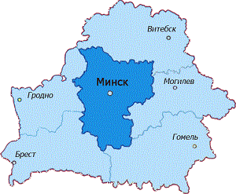

Ниже представлены:


Из последних новостей:
Минск — крупнейший промышленный город Беларуси.
Здесь находятся крупнейшие сборочные предприятия: тракторный завод МТЗ выпускавший около 8-10 % от мирового рынка колёсных тракторов, МАЗ, завод колёсных тягачей VOLAT, производитель дизельных двигателей ММЗ, три станкостроительных завода, а также завод Амкодор — производитель дорожно-строительной и прочей специализированной техники и оборудования. После распада СССР были организованы новые предприятия, такие как Белкоммунмаш, ныне один из крупнейших в СНГ производителей электротранспорта — был создан в начале 1990-х годов на базе ремонтного трамвайно-троллейбусного завода. Помимо крупных машиностроительных предприятий существует ряд высокотехнологичных производств, таких как завод высокоточной оптики Цейсс-БелОМО и лазеров ЛЭМТ.Производитель телевизионной и бытовой техники Горизонт, Белорусский радиоэлектронный завод (БелВАР), завод бытовой техники Атлант и производитель полупроводниковых и микроэлектронных изделий Интеграл. Кроме того в Минске располагаются производства по выпуску парфюмерных и косметических средств: Белита-Витекс, Модум — наша косметика, Белор-Дизайн[7].
А также некоторые предприятия химической промышленности (Открытое акционерное общество «Завод "Белпласт"» по выпуску хоз.товаров, пленочных изделий) .